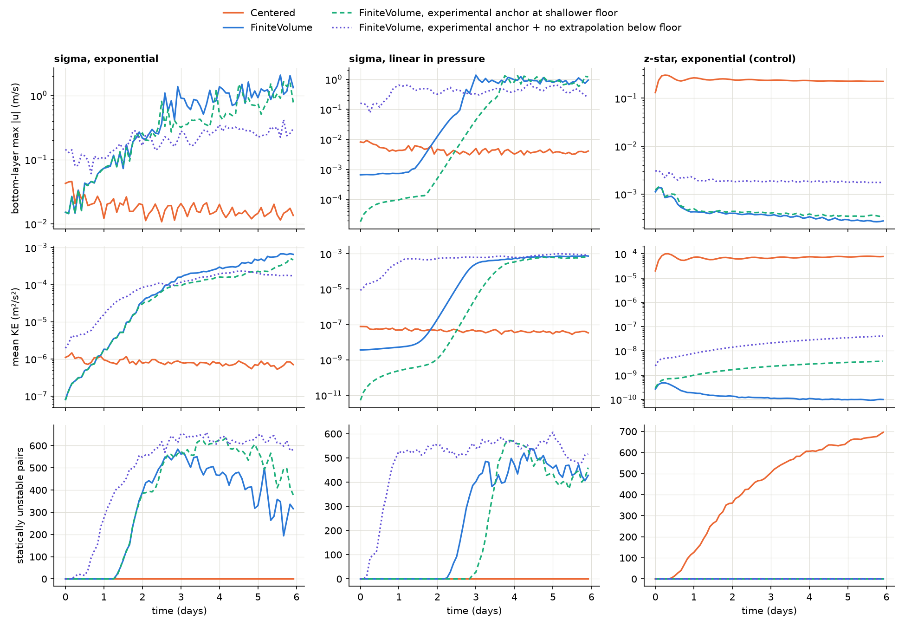

Pressure Gradient
The pressure gradient term in the momentum equation represents the force per unit mass due to horizontal variations in pressure and geopotential. This term is essential for capturing the dynamics of ocean circulation, including both barotropic and baroclinic motions.
Physical Background
In the layered non-Boussinesq momentum equation solved in Omega, the pressure gradient tendency for each edge and layer includes three contributions:
Montgomery potential gradient: The horizontal gradient of the Montgomery potential (\(\alpha p + g z\)), averaged across the top and bottom interfaces of each layer. The Montgomery potential combines the pressure gradient and the geopotential, and its gradient along coordinate surfaces accounts for both the direct pressure force and the effect of tilted layer interfaces that arise when using a general vertical coordinate.
Specific volume correction: A correction term proportional to the gradient of specific volume (inverse density) at each edge. This term ensures that horizontal density variations between the two cells sharing an edge are properly represented in the pressure gradient force.
External geopotential forcing: Contributions from the tidal potential and the self-attraction and loading (SAL) terms. These represent gravitational forcing from astronomical tides and the deformation of the solid Earth and ocean surface in response to the ocean mass distribution. These terms are currently set to zero and will be provided by a future tidal forcing module.
Configuration Options
The pressure gradient method is configured in the input YAML file under the
PressureGrad section:
PressureGrad:
PressureGradType: 'FiniteVolume' # Centered | FiniteVolume
HorzOrder: 2 # FiniteVolume only
VerticalReconstruction: 'linear'
QuadraturePoints: 2
An unrecognized PressureGradType is a fatal error rather than a silent
fallback to the centered scheme, so that a typo cannot produce a run that looks
like a passing centered run.
Available Methods
Centered Difference ('centered' or 'Centered')
Computes the pressure gradient using a centered finite-difference approximation of the Montgomery potential gradient and specific volume correction
Suitable for global ocean simulations without ice shelf cavities
The reference implementation the finite-volume scheme is checked against
Finite Volume ('FiniteVolume' or 'finiteVolume')
The default
Compares the geopotential of the two columns sharing an edge at a common pressure, rather than at a common layer index
Gives a pressure gradient that is zero to machine precision for any resting ocean whose temperature and salinity vary linearly with pressure, at any coordinate tilt or layer thickness, provided the two columns’ sea floors are at the same pressure
Over a sloping sea floor a residual remains, from shifting the two columns’ sea-floor heights to a common pressure. It grows with the cube of the pressure difference between the two floors, so it stays small where partial bottom cells cut the floor beneath level interior layers, but with terrain-following layers over slopes of order 100 m/km it approaches the centered scheme’s error
Intended for simulations with ice shelf cavities and steep bathymetry, where the centered scheme carries an error that is first order in the coordinate tilt and accumulates downward through the column
Second order in the horizontal, using the same two-cell stencil as the centered scheme
Finite-volume sub-options
These apply only when PressureGradType is FiniteVolume. All three are
optional; a configuration written without them gets the values below.
Option |
Default |
Meaning |
|---|---|---|
|
|
Width of the edge stencil. |
|
|
Degree of the mean-preserving reconstruction of temperature and salinity in pressure. |
|
|
Number of points, 1 to 4, at which the integrand is evaluated within each edge layer |
QuadraturePoints is an accuracy setting only. The quantity being
integrated is zero at every point for any profile the reconstruction resolves
exactly, so no choice of quadrature can affect that exactness; the setting
trades cost against accuracy elsewhere. Two points is exact for the integrand
within a sub-interval and is the default. More is worth considering only where
neighbouring columns’ layer interfaces are strongly offset in pressure.
There is no setting that reduces the finite-volume scheme to the centered one. The two are separate implementations, which is deliberate: their agreement is used as a cross-check on the mesh, vertical coordinate and equation-of-state state they both read.
Known issue: terrain-following layers over steep slopes
On terrain-following (sigma) layers over a steep seamount, the finite-volume scheme develops a grid-scale instability that the centered scheme does not. It starts in the bottom layer on the seamount’s steep flank, grows by a factor of about 2.6 per day, and produces static instabilities after one to three days (Fig. 14). The growth rate follows the slope of the seamount, not the number of layers: halving the seamount height delays the instability but does not remove it. The centered scheme stays stable in every sigma configuration tested, while on z-star layers over the same seamount the finite-volume scheme stays clean through 20 days and the centered scheme does not.


Fig. 14 Bottom-layer maximum speed, mean kinetic energy and number of statically unstable layer pairs over six days of the Polaris seamount test, for sigma layers with exponential and linear-in-pressure stratification and for z-star layers as a control. The two experimental curves change only the finite-volume treatment at the sea floor.
The cause is not yet known. It is not the sea-floor anchor described under “Over a sloping sea floor” above: an experimental anchor that removes that error starts the linear-in-pressure sigma run about 700 times lower in kinetic energy, but the same mode then grows at the same rate to the same state. Turning off extrapolation below a column’s floor as well makes the instability worse, and the runs already use the monotonic tracer limiter.
Omega’s default p-star coordinate, like z-star, keeps its layers close to level rather than following the bathymetry, so the instability is not expected in operational configurations. However, p-star over the seamount has not been tested directly. Use the centered scheme with sigma coordinates over steep bathymetry until this is resolved.
Dependencies
The pressure gradient calculation requires the following Omega components to be initialized first:
Horizontal Mesh: provides mesh geometry including distances between cell centers and edge connectivity
Vertical Coordinate: provides pressure at layer mid-points and interfaces, geometric interface heights (\(z\)), and geopotential
Equation of State: provides the specific volume field
Ocean State: provides the current pseudo-thicknesses